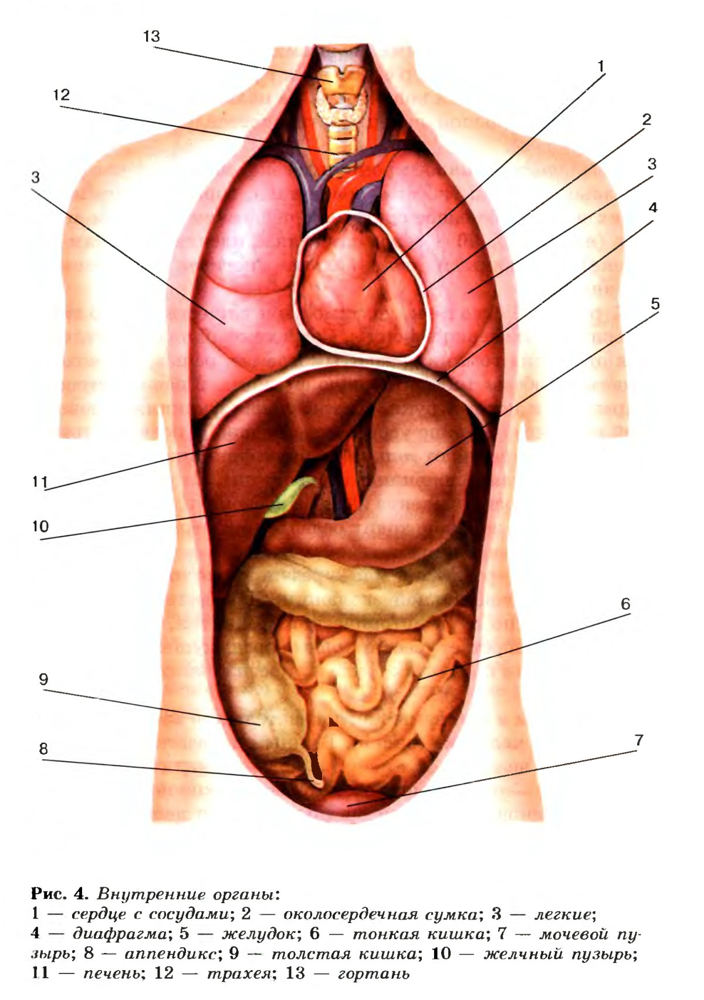

Анато́мия (от греч. ἀνα- «вновь; сверху» + τέμνω «режу, рублю, рассекаю») — раздел биологии, изучающий строение тела, организмов и их частей на уровне выше тканевого. Анатомия как наука (собственно предмет анатомии) изучает не только внешнее строение организма в целом, но и внутреннюю форму и структуру органов, входящих в его состав. Современная анатомия с помощью микроскопии срезов анатомических препаратов смогла раздвинуть горизонты познания и выделить ещё один аспект морфологической науки — микроскопическую анатомию. В свою очередь микроскопическая анатомия тесно связана с наукой о тканях (гистологией от греч. hystós — ткань), изучающей закономерности развития и строения тканей, а также с наукой о клетке (цитологией от греч. cýtos — клетка), которая исследует закономерности развития, строения и деятельности отдельных клеток, из которых построены ткани и органы исследуемого макроорганизма. Взятые вместе анатомия, гистология, цитология и эмбриология (от греч. émbryon — зародыш) в совокупности представляют общую науку о форме, развитии и строении организма — морфологию (от греч. morphé — форма).
